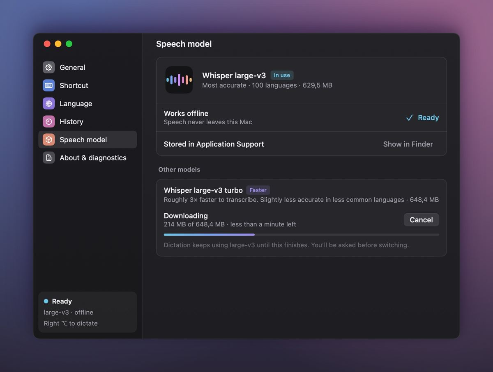
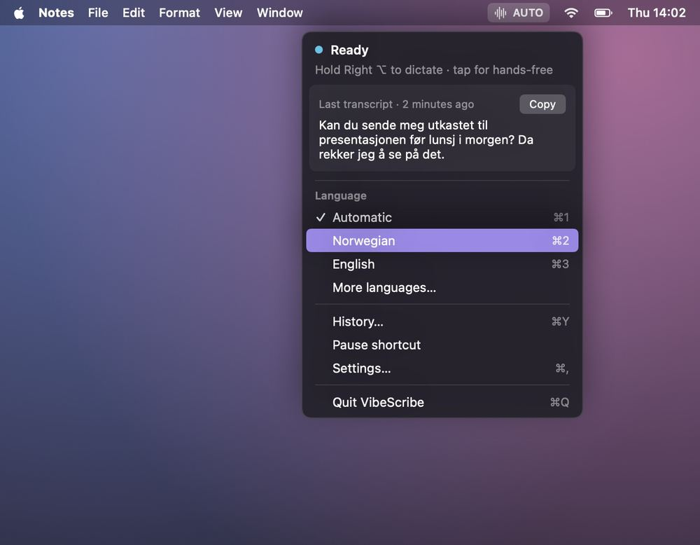

Support
How can we help?
Answers to common questions about setting up and using VibeScribe. If you can’t find what you need, open an issue on GitHub.
Version and requirements
- Version
- 1.0.0
- Requires
- macOS 14 Sonoma or later
- Mac
- Apple silicon (M1 or later)
- Disk space
- About 630 MB for the speech model
Free on the Mac App Store, with no in-app purchases. An internet connection is needed once, to download the speech model.
Getting started
Which permissions does VibeScribe need, and why?
VibeScribe asks for three permissions during setup. macOS asks for each one separately, and the setup list updates on its own when you come back from System Settings.
- Microphone, to hear you while the shortcut is held. Required. The audio stays in memory on your Mac and is discarded after transcription.
- Input Monitoring, to notice your shortcut (Right ⌥ by default) while you are in other apps. Required for the shortcut to work outside VibeScribe. VibeScribe only checks whether a key matches your shortcut and never records what you type.
- Accessibility, to paste the text for you by sending ⌘V. Optional. Without it, the text is copied to the clipboard and you paste it yourself.
You can review them at any time in System Settings › Privacy & Security, or in VibeScribe’s Settings › About & diagnostics.
How big is the speech model, and where is it stored?
The default model, Whisper large-v3, is about 630 MB. VibeScribe downloads it once from Hugging Face during setup and checks every file before using it. You can close the setup window while it downloads: the download continues from the menu bar, and it picks up again if your connection drops.
The first time the model loads, it is prepared for your Mac’s chip, which takes about a minute. After that, VibeScribe works without internet.
The model is stored in VibeScribe’s Application Support folder inside its App Sandbox container:
~/Library/
To open it, choose Settings › Speech model › Show in Finder.

Does VibeScribe need an internet connection?
Only to download a speech model. Transcription runs entirely on your Mac, so once setup is done you can dictate offline, on a plane or anywhere else.
Using VibeScribe
How do I dictate?
Click where you want the text, hold Right ⌥, speak, and let go. The text is pasted where your cursor is. A small overlay at the top of the screen shows what VibeScribe is doing.
- Hands-free: tap the key instead of holding it, and tap again when you are done.
- Cancel: press esc to throw away a recording without pasting.
- Hold or tap only: choose Hold only or Tap only in Settings › Shortcut › How it works.
- Take a break: tick Pause shortcut in the menu bar menu to turn the shortcut off until you untick it or quit VibeScribe.
Your latest transcript is always in the menu bar menu, with a Copy button.

How do I change the shortcut?
Open Settings › Shortcut from the menu bar menu. Click the Dictation key field and press the key you want to use. Single modifier keys such as Right ⌥ work best, because they don’t type anything in other apps, but key combinations work too.
Press esc to stop without changing anything, or click Reset to go back to Right ⌥. The shortcut for the language picker (⌥⇧ by default) is changed in the same place.
Which languages does VibeScribe understand?
Whisper recognizes about 100 languages. Accuracy is best in widely spoken languages and varies for others.
- Automatic detection works for most people. If short phrases come out in the wrong language, pick your language in Settings › Language or from the menu bar menu.
- Press ⌥⇧ to open the language picker. Search by English or native name, and press ⌘P to pin a language.
- Pin up to three languages and switch between them with ⌘1–⌘3 from the menu, or while the picker is open.
What is the turbo model?
Whisper large-v3 turbo is an optional second model. It transcribes roughly three times faster, but is slightly less accurate in less common languages.
To try it, open Settings › Speech model and download it under Other models. It needs about 650 MB more disk space. Dictation keeps using large-v3 while it downloads, and you are asked before switching. Switching pauses dictation for about a minute while the model loads.
You can switch back at any time. To free about 630 MB, click Delete… next to the model you are not using.
Can I help it spell names and jargon?
Yes. Add words to Vocabulary in Settings › Language, separated by commas. They are hints to the model rather than guarantees, and long lists can reduce accuracy, so stick to the words that matter most.
Can I get the text on the clipboard instead of pasted?
Yes. In Settings › General, choose Clipboard only under Send text to, then paste with ⌘V wherever you like. When VibeScribe does paste for you, Restore clipboard after pasting puts back whatever you had copied before.
Troubleshooting
The text isn’t pasted, or the overlay says “Copied”
“Copied · Press ⌘V to paste” means VibeScribe put the text on the clipboard but couldn’t paste it for you. Check the following:
- If the menu bar icon has an orange dot and the menu says Pasting is off, click Turn on in System Settings… in the menu.
- Accessibility is turned on for VibeScribe in System Settings › Privacy & Security › Accessibility. If it is on but pasting still fails, for example after an update, select VibeScribe in that list, remove it with the − button, and allow it again.
- Send text to is set to Active app in Settings › General.
- The cursor is in a text field before you start speaking.
- If an app pastes what you had copied earlier instead of the transcript, it may be slow to accept the paste. Turn off Restore clipboard after pasting in Settings › General.
- Some apps and fields don’t accept pasted text. For those, choose Clipboard only under Send text to in Settings › General.
Nothing is lost: your latest transcript is in the menu bar menu with a Copy button, and History has Copy and Paste again for earlier ones.
It says “No speech heard”
VibeScribe skips silence so that Whisper doesn’t invent words, and it pastes nothing if it didn’t hear any speech. Try this:
- Open Settings › General and watch the level meter next to Microphone while you talk. If it doesn’t move, choose another input.
- Keep holding the key until you have finished speaking, and speak at a normal volume.
- If you use a headset or AirPods, check that they are connected and chosen as the input.
- If the input device changes during a recording, VibeScribe stops that recording. Press the shortcut again.
Nothing happens when I press the shortcut
- Check that Input Monitoring is turned on for VibeScribe in System Settings › Privacy & Security › Input Monitoring. If you just turned it on, quit VibeScribe from the menu and open it again.
- Make sure Pause shortcut isn’t ticked in the menu bar menu. While it is ticked, the menu bar icon looks dimmed.
- Check which key is set in Settings › Shortcut.
- A dot next to the menu bar icon means something needs your attention: orange for a permission, red for the speech model. Open the menu to see what is wrong and how to fix it.
“Microphone access is off”, “Loading speech model” or “Couldn’t transcribe”
- Microphone access is off: turn on VibeScribe in System Settings › Privacy & Security › Microphone.
- Loading speech model: the model is loading after launch or after switching models. The very first load takes about a minute.
- Couldn’t transcribe, or a red dot next to the menu bar icon: open Settings › Speech model, which explains what went wrong and offers Try again. Make sure you have enough free disk space and, if a download stopped, an internet connection.
How do I report a problem?
Open an issue on GitHub and describe what you expected and what happened. A diagnostic report helps: Settings › About & diagnostics › Copy diagnostic report copies your app and macOS versions, model and permission status, main settings and a technical log to the clipboard. It never includes your transcripts, but read it before you paste it, because issues are public.
Privacy and data
Does my voice leave my Mac?
No. The audio is held in memory only while it is transcribed on your Mac, then discarded. It is never saved or uploaded. The only network access is downloading the speech model from Hugging Face. Read the privacy policy for the details.
How do I delete my history?
Choose Settings › History › Clear History… to remove all saved transcripts from your Mac. This can’t be undone.
To stop saving transcripts, choose Don’t keep history in the menu next to the search field. This also clears the history you already have. Otherwise, choose how long to keep transcripts: 1 day, 7 days, 30 days (the default) or forever. Older ones are removed automatically.
How do I uninstall VibeScribe?
- Choose Quit VibeScribe from the menu bar menu.
- Move VibeScribe from your Applications folder to the Trash.
- To also remove your history, settings, vocabulary and the downloaded models, delete the folder
~/Library/. In Finder, choose Go › Go to Folder, paste the path, and move the folder to the Trash.Containers/ io.m10s.vibescribe - If you like, remove VibeScribe from System Settings › Privacy & Security (Microphone, Input Monitoring and Accessibility) and from System Settings › General › Login Items.
Still stuck?
Ask a question or report a bug on GitHub. Issues are public, so please don’t include personal information or private transcripts.